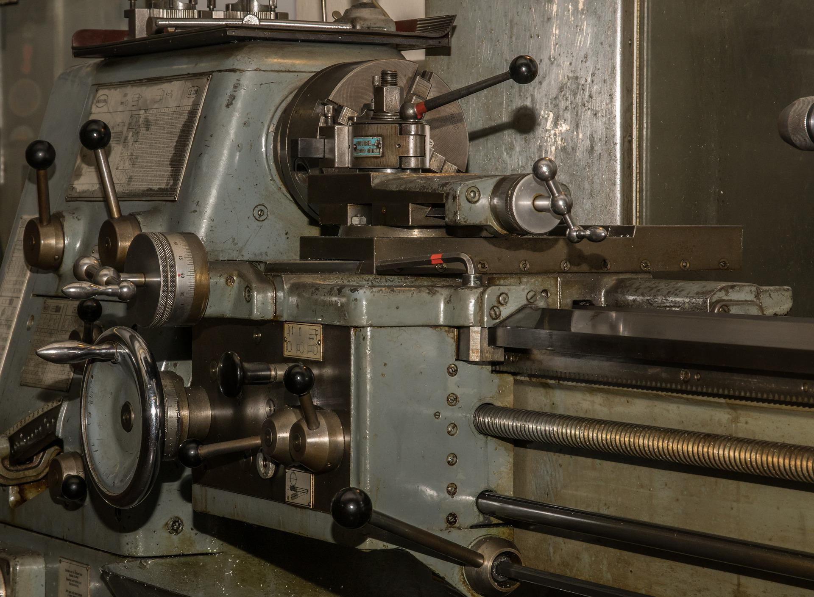
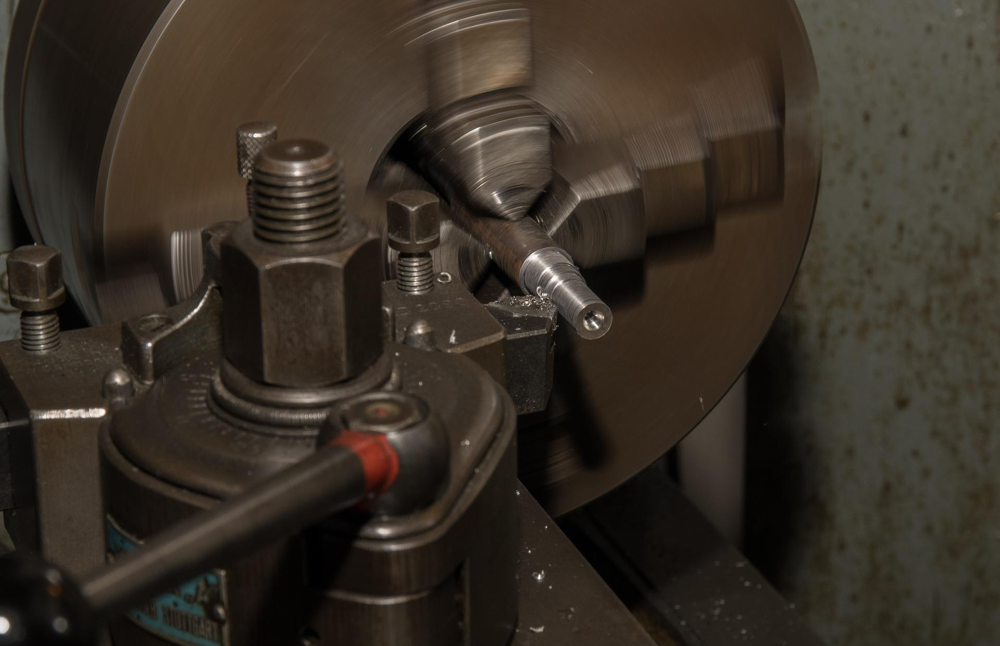
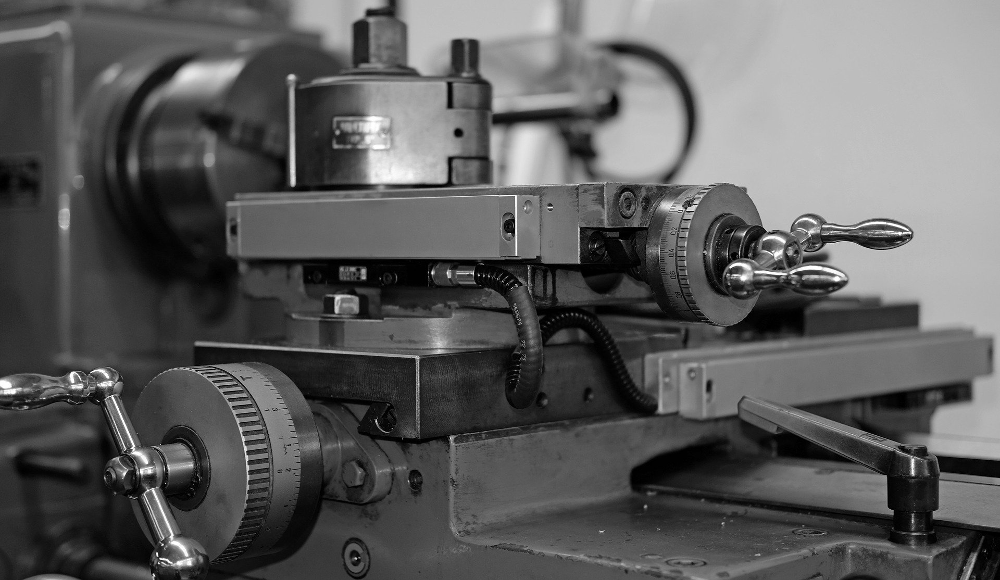
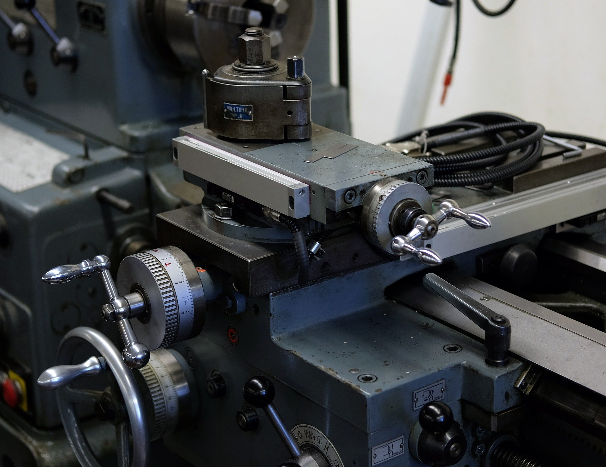
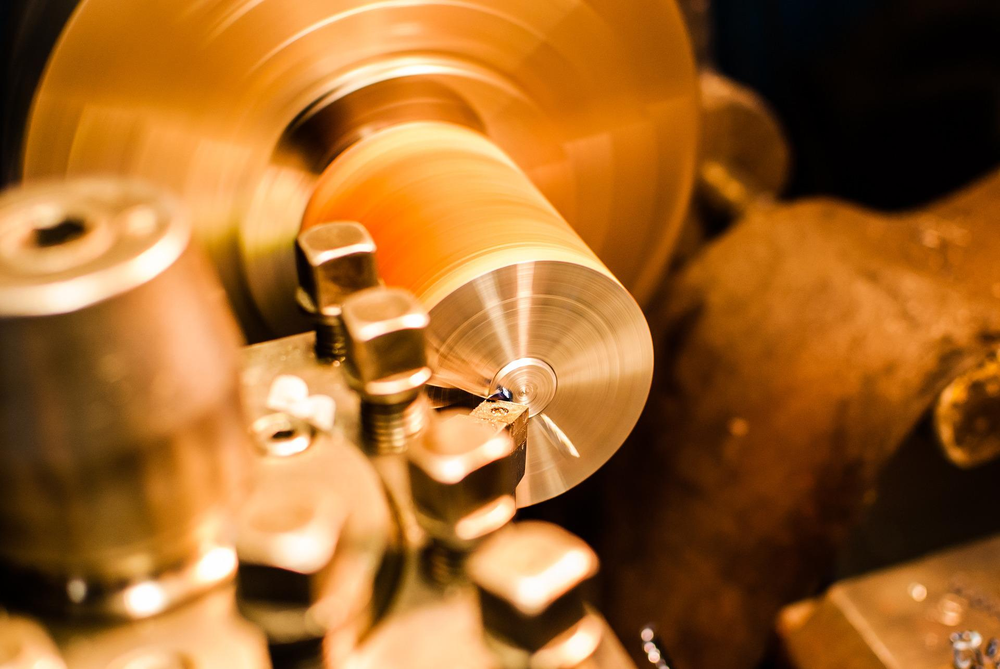
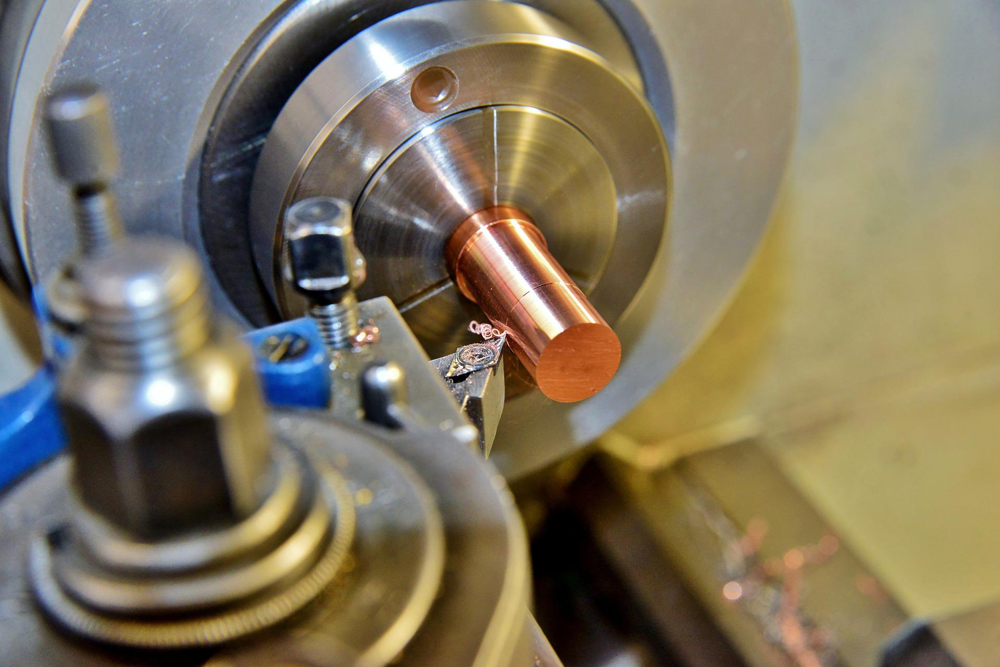
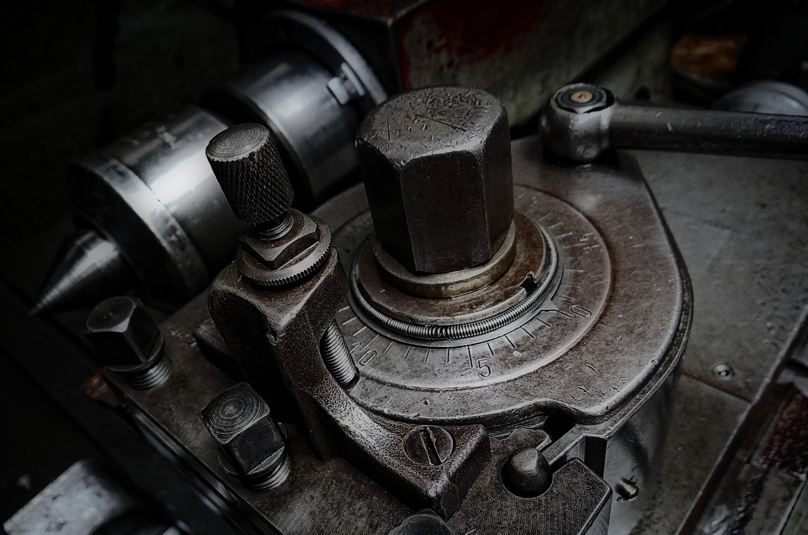
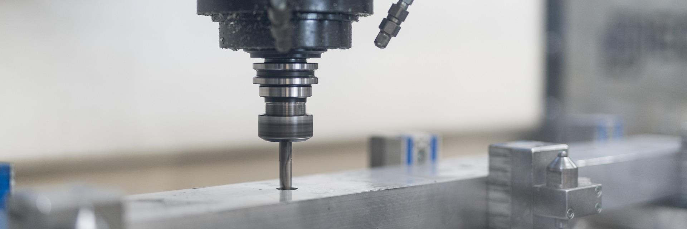

"ПКФ МетСервис-А"
Компания «ПКФ Метсервис-А», имея парк производственного оборудования, изготавливает и поставляет продукцию по ГОСТ, ТУ, ОСТ, ISO, DIN, производит более 10 000 наименований изделий из металлов и сплавов: фундаментные болты и металлические элементы фундаментов (ростверки, наголовники), фермы для промышленных и гражданских зданий, металлические лестницы, площадки, ограждения, шарниры, крепежи, закладные детали, штуцеры и другие метизы любых размеров и форм из различных металлов и сплавов (ст. 3, 09Г2С, 20, 35, 40Х и др., «нержавейка», латунь, бронза). «ПКФ Метсервис-А» выполняет термообработку, термодиффузию, оцинковку, антикоррозийные покрытия: цинол, цинотан. Гибочное оборудование позволяет изготавливать из листового металла сложные изделия. На сварочном участке соединют отдельные изделия в единую деталь, что позволяет производить технически сложную продукцию. На токарном участке производят продукцию с большой точностью, что обеспечивает использование изделий в высокоточных конструкциях.







